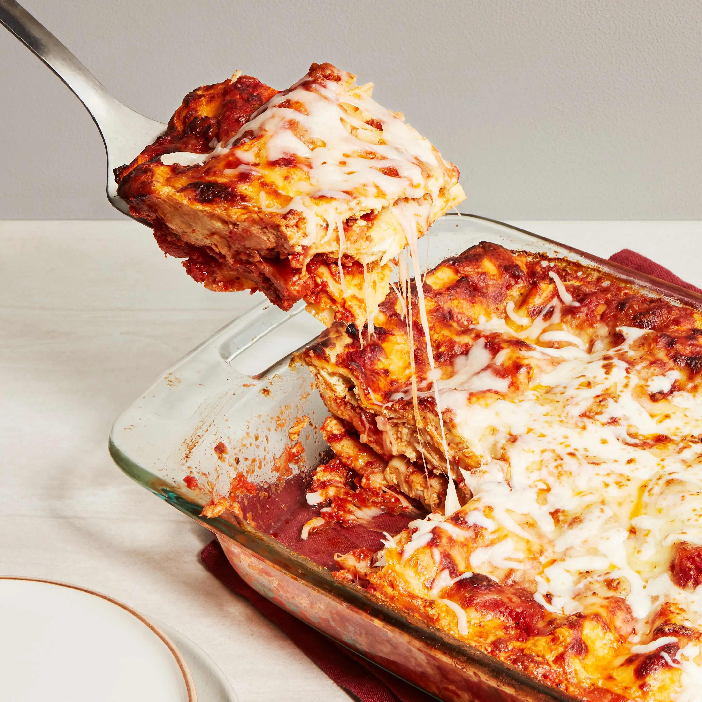

Back Home

Description
Lasagna is a classic Italian dish made of wide,
flat pasta sheets layered with rich, savory fillings.
Traditional lasagna features layers of pasta,
a hearty meat or vegetable sauce, creamy ricotta or béchamel,
and melted cheese, typically mozzarella and Parmesan.
The dish is baked until golden and bubbly, resulting in a comforting, flavorful meal with a perfect balance of textures—tender pasta, rich sauce, and gooey cheese.
Variations include vegetarian versions with spinach and ricotta, or different proteins like chicken or seafood. Often served as a main course, lasagna is a beloved comfort food enjoyed worldwide.
Ingredients
- Lasagna noodles
- Ground beef (or a meat substitute)
- Tomato sauce
- Ricotta cheese
- Mozzarella cheese
- Italian seasoning
Steps
- Gather all necessary ingredients, including lasagna noodles, ground meat (or vegetables for a vegetarian option), tomato sauce, ricotta cheese, mozzarella cheese, parmesan cheese, garlic, onions, and seasonings. Cook the meat and mix it with the sauce.
- In a baking dish, spread a thin layer of sauce, followed by a layer of lasagna noodles, ricotta cheese, and shredded mozzarella. Repeat the layering process until all ingredients are used, finishing with a layer of sauce and cheese on top.
- Cover the dish with foil and bake in a preheated oven at 375°F (190°C) for about 30–40 minutes. Then, remove the foil and bake for another 10–15 minutes until the cheese is golden and bubbly.
- Let the lasagna rest for about 10 minutes before slicing to allow it to set. Serve hot and enjoy!
Enjoy your deliciously cheesy lasagna!